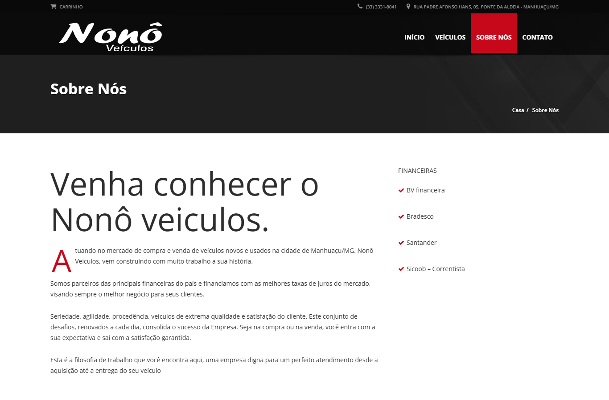
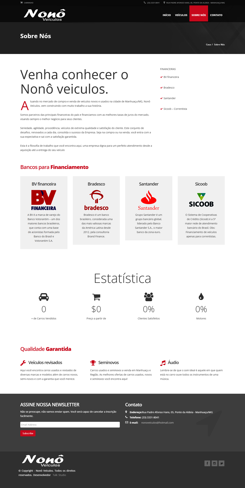

Sistema de Investigação de Marca e Identidade Online
https://nonoveiculos.com.br/sobre-nos/
Prioridade: MEDIUM · Cenário: B_AMBIGUOUS_COMMUNICATION · Revisão humana: PENDING
Trata-se da página institucional ('Sobre Nós') da loja de veículos 'Nonô Veículos' (Manhuaçu/MG), que oferta financiamento de veículos afirmando ser parceira das principais financeiras. Embora apresente a marca em contexto multibancos (junto a Bradesco, Santander e Sicoob) e com identidade visual própria da revenda, a página exibe o logotipo da BV Financeira (desatualizado) e omite totalmente o CNPJ, a razão social da loja e a declaração obrigatória de correspondente bancário à luz da Resolução CMN nº 4.935/2021. Assim, enquadra-se em comunicação ambígua / falha de transparência (B_AMBIGUOUS_COMMUNICATION / REVIEW_REQUIRED). [Revisor: CONFIRM] A análise original sustenta-se integralmente nas evidências coletadas. Trata-se de uma loja física de veículos ('Nonô Veículos' em Manhuaçu/MG) que oferta intermediação de financiamento ('Somos parceiros das principais financeiras do país e financiamos com as melhores taxas de juros do mercado', E-TXT-001) e exibe o logotipo da BV Financeira (versão anterior da marca Banco BV) e texto institucional na seção 'Bancos para Financiamento' (E-SHOT-FULL, E-HEAD-3, E-TXT-005, E-TXT-006). Embora atue em contexto multimarcas/multibancos e com identidade visual própria (E-SHOT-VIEWPORT), a página omite o CNPJ, a razão social da empresa, a declaração formal de correspondente no país e os dados de ouvidoria exigidos pela Resolução CMN nº 4.935/2021 (E-FTR, E-SHOT-FULL). Confirma-se, portanto, a classificação REVIEW_REQUIRED com prioridade MEDIUM.


| Ref | Tipo | Local | Conteúdo |
|---|---|---|---|
| E-URL | domain | url | URL final: https://nonoveiculos.com.br/sobre-nos/ (domínio: nonoveiculos.com.br) |
| E-DISC-001 | text | search_index | Índice de busca (grounding): nonoveiculos.com.br — **URL:** `https://nonoveiculos.com.br/sobre-nos` | **Uso da Marca e Recursos:** Loja de veículos novos e usados que se apresenta como parceira das principais financeiras (*"financiamos com as melhores taxas de juros do mercado"*) e destaca uma seção exclusiva para a **BV Financeira**, reproduzindo a descrição institucional do Banco Votorantim/BV para agregar autoridade à loja | **Conformidade (CNPJ / Razão Social / Declaração):** Informa endereço físico e telefone de contato, mas omite o CNPJ, a Razão Social e a declaração formal de correspondente bancário |
| E-SHOT-VIEWPORT | screenshot | viewport | evidence\Cf75c73c706\attempt-1\viewport.png (sha256 85ad27f0b0d9acbc…) |
| E-SHOT-FULL | screenshot | page | evidence\Cf75c73c706\attempt-1\fullpage.png (sha256 8f7df9c3f712bfbf…) |
| E-TITLE | title | head | Sobre Nós - Nonô Veículos |
| E-META-1 | meta | head | og:site_name: Nonô Veículos |
| E-META-2 | meta | head | og:title: Sobre Nós - Nonô Veículos |
| E-META-3 | meta | head | author: Alex Matos (contato@alex.net.br) |
| E-CANONICAL | meta | head | https://nonoveiculos.com.br/sobre-nos/ |
| E-HEAD-1 | heading | page | Sobre Nós |
| E-HEAD-2 | heading | page | Venha conhecer o Nonô veiculos. |
| E-HEAD-3 | heading | page | Bancos para Financiamento |
| E-HEAD-4 | heading | page | Estatística |
| E-HEAD-5 | heading | page | Qualidade Garantida |
| E-HDR | text | header | CARRINHO (33) 3331-8041 RUA PADRE AFONSO HANS, 05, PONTE DA ALDEIA - MANHUAÇU/MG INÍCIO VEÍCULOS SOBRE NÓS CONTATO |
| E-FOLD | text | viewport (acima da dobra) | Carrinho (33) 3331-8041 Rua Padre Afonso Hans, 05, Ponte da Aldeia - Manhuaçu/MG Início Veículos Sobre Nós Contato Sobre Nós Casa Sobre Nós Venha conhecer o Nonô veiculos. A tuando no mercado de compra e venda de veículos novos e usados na cidade de Manhuaçu/MG, Nonô Veículos, vem construindo com muito trabalho a sua história. Somos parceiros das principais financeiras do país e financiamos com as melhores taxas de juros do mercado, visando sempre o melhor negócio para seus clientes. Seriedade, agilidade, procedência, veículos de extrema qualidade e satisfação do cliente. Este conjunto de desafios, renovados a cada dia, consolida o sucesso da Empresa. Seja na compra ou na venda, você entra com a sua expectativa e sai com a satisfação garantida. Esta é a filosofia de trabalho que você encontra aqui, uma empresa digna para um perfeito atendimento desde a aquisição até a entrega do seu veículo FINANCEIRAS BV financeira Bradesco Santander Sicoob – Correntista |
| E-FTR | text | footer | ASSINE NOSSA NEWSLETTER Não se preocupe, não vamos enviar spam. Você será capaz de cancelar a inscrição facilmente. Subscribe Contato Endereço: Rua Padre Afonso Hans, 05, Ponte da Aldeia - Manhuaçu/MG Telefone: (33) 3331-8041 E-mail:nonoveiculos@hotmail.com |
| E-NAV | nav | header | CARRINHO <https://nonoveiculos.com.br/sobre-nos/#> | (33) 3331-8041 <https://nonoveiculos.com.br/sobre-nos/1-800-567-0123> | RUA PADRE AFONSO HANS, 05, PONTE DA ALDEIA - MANHUAÇU/MG <https://nonoveiculos.com.br/sobre-nos/#> | <https://nonoveiculos.com.br/> | INÍCIO <https://nonoveiculos.com.br/> | VEÍCULOS <https://nonoveiculos.com.br/veiculos/> | SOBRE NÓS <https://nonoveiculos.com.br/sobre-nos/> | CONTATO <https://nonoveiculos.com.br/contato/> |
| E-CTA-1 | cta | footer | Subscribe |
| E-CONTACT-1 | contact | footer | nonoveiculos@hotmail.com <mailto:nonoveiculos@hotmail.com> |
| E-CONTACT-2 | contact | page | <https://www.facebook.com/nonoveiculos/> |
| E-CONTACT-3 | contact | page | <https://www.instagram.com/nono_veiculos/> |
| E-CONTACT-4 | contact | page | <https://www.facebook.com/nonoveiculos/> |
| E-IMG-1 | image | header (acima da dobra) | imagem alt='logo' src=https://nonoveiculos.com.br/wp-content/uploads/2019/05/nono-veiculos-logo2-1.png (270x65, acima da dobra) |
| E-IMG-2 | image | page | imagem alt='logo' src=https://nonoveiculos.com.br/wp-content/uploads/2019/05/nono-veiculos-logo2-1.png (270x65, abaixo da dobra) |
| E-TXT-001 | text | page | Somos parceiros das principais financeiras do país e financiamos com as melhores taxas de juros do mercado, visando sempre o melhor negócio para seus clientes. |
| E-TXT-002 | text | page | Esta é a filosofia de trabalho que você encontra aqui, uma empresa digna para um perfeito atendimento desde a aquisição até a entrega do seu veículo |
| E-TXT-003 | text | page | BV financeira |
| E-TXT-004 | text | page | Bancos para Financiamento |
| E-TXT-005 | text | page | BV financeira |
| E-TXT-006 | text | page | A BV é a marca de varejo do Banco Votorantim – um dos maiores bancos brasileiros, que conta com uma base de acionistas formada pelo Banco do Brasil e Votorantim S.A. |
| E-TXT-007 | text | page | Bradesco é um banco brasileiro, considerada uma das mais valiosas marcas da América Latina desde 2012, pela consultoria Brand Finance. |
| E-TXT-008 | text | page | Grupo Santander é um grupo bancário global, liderado pelo Banco Santander S.A., o maior banco da zona euro. |
| E-TXT-009 | text | page | O Sistema de Cooperativas de Crédito (Sicoob) é a 5ª maior rede de atendimento bancário do Brasil. Obs: Financiamento de veículos apenas para correntistas. |
| E-TXT-010 | text | page | Endereço: Rua Padre Afonso Hans, 05, Ponte da Aldeia - Manhuaçu/MG |
| E-TXT-011 | text | page | Telefone: (33) 3331-8041 |
| Dimensão | Sinal | Achado | Refs |
|---|---|---|---|
| VISUAL_IDENTITY | LEGITIMATE | O site utiliza identidade visual própria da loja 'Nonô Veículos' (preto, branco e vermelho), sem imitar o layout ou paleta de cores do Banco BV. | E-SHOT-VIEWPORT E-SHOT-FULL E-IMG-1 |
| DECLARED_COMMERCIAL_IDENTITY | CONFUSION | Apesar de informar nome fantasia ('Nonô Veículos'), endereço em Manhuaçu/MG e telefone, o estabelecimento não exibe CNPJ nem razão social no rodapé ou no corpo da página. | E-TITLE E-FTR E-TXT-010 E-SHOT-FULL |
| CORRESPONDENT_TRANSPARENCY | CONFUSION | A loja afirma financiar veículos como parceira das principais financeiras, mas não apresenta aviso de correspondente bancário no país nem dados das instituições contratantes conforme exigido pela Resolução CMN nº 4.935/2021. | E-FOLD E-TXT-001 E-SHOT-FULL |
| INSTITUTIONAL_LANGUAGE | NEUTRAL | A loja se apresenta em nome próprio ('Venha conhecer o Nonô veiculos'), embora reproduza um breve texto descritivo institucional sobre a marca BV/Banco Votorantim no card de bancos parceiros. | E-HEAD-2 E-TXT-001 E-TXT-006 |
| LOGO_USAGE | CONFUSION | Uso do logotipo gráfico da 'BV Financeira' em card dedicado na seção 'Bancos para Financiamento', ao lado de logotipos de outros bancos (Bradesco, Santander, Sicoob), sem o devido aviso de correspondente bancário. | E-SHOT-FULL E-HEAD-3 E-TXT-005 |
| SERVICE_JOURNEY | LEGITIMATE | Página institucional ('Sobre Nós') sem formulários de captação de dados sensíveis ou simulador de financiamento em nome do banco. | E-URL E-SHOT-FULL |
| CONTACT_CHANNELS | LEGITIMATE | Os canais de contato divulgados (telefone fixo e e-mail nonoveiculos@hotmail.com) estão claramente vinculados à loja de veículos, sem se passar por central ou SAC do Banco BV. | E-FTR E-CONTACT-1 E-TXT-011 |
| CONSUMER_CONFUSION | NEUTRAL | Não há risco de o consumidor acreditar estar em um canal oficial do Banco BV, pois o contexto de loja multimarcas e multibancos é claro, mas há falha de transparência regulatória na oferta de financiamento. | E-SHOT-VIEWPORT E-SHOT-FULL |
Trata-se da página institucional ('Sobre Nós') da loja de veículos 'Nonô Veículos' (Manhuaçu/MG), que oferta financiamento de veículos afirmando ser parceira das principais financeiras. Embora apresente a marca em contexto multibancos (junto a Bradesco, Santander e Sicoob) e com identidade visual própria da revenda, a página exibe o logotipo da BV Financeira (desatualizado) e omite totalmente o CNPJ, a razão social da loja e a declaração obrigatória de correspondente bancário à luz da Resolução CMN nº 4.935/2021. Assim, enquadra-se em comunicação ambígua / falha de transparência (B_AMBIGUOUS_COMMUNICATION / REVIEW_REQUIRED).
Nenhum CNPJ ou razão social identificáveis no conteúdo coletado.
| Tipo | Valor | Ref | Contexto |
|---|---|---|---|
| domain | nonoveiculos.com.br | E-URL | |
| contato@alex.net.br | E-META-3 | ||
| nonoveiculos@hotmail.com | E-FTR | ||
| social_profile | https://www.facebook.com/nonoveiculos/ | E-CONTACT-2 | |
| social_profile | https://www.instagram.com/nono_veiculos/ | E-CONTACT-3 | |
| trade_name | Nonô Veículos | E-META-2 | |
| phone | (33) 3331-8041 | E-HDR | |
| partnership_declaration | parceira | E-DISC-001 | **Uso da Marca e Recursos:** Loja de veículos novos e usados que se apresenta como parceira das principais financeiras (*"financiamos com as melhores taxas de juros do mercado"*) e destaca uma seção e |
Mapeamento indicativo para apoio à auditoria. Não constitui conclusão regulatória; a decisão definitiva pertence à auditoria.
Fonte: NORMATIVE
Art. 14. O contrato de correspondente deve estabelecer: [...] II - vedação à utilização, pelo contratado, de logomarca ou de outros atributos que sejam similares aos adotados pela instituição contratante em suas agências, postos de atendimento, sítio eletrônico na internet, aplicativo ou outras plataformas de comunicação em rede;
Hipótese: Uso de logomarca ou de atributos similares aos adotados pela contratante em seus canais. A norma disciplina correspondentes contratados; o responsável não foi identificado como correspondente.
Evidência observada: E-HEAD-3 E-SHOT-FULL E-TXT-005 E-TXT-006
Informação faltante:
Fonte: NORMATIVE
Art. 14. O contrato de correspondente deve estabelecer: [...] III - divulgação ao público, pelo contratado, de sua condição de prestador de serviços à instituição contratante, identificada pelo nome com que é conhecida no mercado, com descrição dos produtos e serviços oferecidos e canais de contato da instituição contratante, inclusive de sua ouvidoria, em local visível, em destaque e em formato legível, por meio de: a) sítio eletrônico do correspondente na internet, acessível na página inicial; b) aplicativo e outras plataformas de comunicação em rede do correspondente; [...]
Hipótese: Divulgação ao público da condição de prestador de serviços à contratante ausente, insuficiente ou sem destaque. A norma disciplina correspondentes contratados; o responsável não foi identificado como correspondente.
Evidência observada: E-FOLD E-FTR E-SHOT-FULL E-TITLE E-TXT-001 E-TXT-010 E-TXT-011
Informação faltante:
Fonte: NORMATIVE
Art. 3º O correspondente atua por conta e sob as diretrizes da instituição contratante, que assume inteira responsabilidade pelo atendimento prestado aos clientes e usuários por meio do contratado.
Evidência observada: E-CONTACT-1 E-FTR E-SHOT-FULL E-TXT-011 E-URL
Se o responsável não for correspondente contratado, os indícios podem caracterizar uso indevido de marca ou fraude, fora do escopo da Res. 4.935: avaliar encaminhamento às áreas jurídica/segurança.
Limitações: requisitos contratuais/internos não fornecidos: mapeamento limitado ao texto normativo
Decisão: CONFIRM → REVIEW_REQUIRED / MEDIUM
A análise original sustenta-se integralmente nas evidências coletadas. Trata-se de uma loja física de veículos ('Nonô Veículos' em Manhuaçu/MG) que oferta intermediação de financiamento ('Somos parceiros das principais financeiras do país e financiamos com as melhores taxas de juros do mercado', E-TXT-001) e exibe o logotipo da BV Financeira (versão anterior da marca Banco BV) e texto institucional na seção 'Bancos para Financiamento' (E-SHOT-FULL, E-HEAD-3, E-TXT-005, E-TXT-006). Embora atue em contexto multimarcas/multibancos e com identidade visual própria (E-SHOT-VIEWPORT), a página omite o CNPJ, a razão social da empresa, a declaração formal de correspondente no país e os dados de ouvidoria exigidos pela Resolução CMN nº 4.935/2021 (E-FTR, E-SHOT-FULL). Confirma-se, portanto, a classificação REVIEW_REQUIRED com prioridade MEDIUM.
| Tema | Severidade | Questionamento | Refs |
|---|---|---|---|
| domain_attribution | MEDIUM | Responsável pela página não identificado; a conclusão sobre a marca não pode ser atribuída a um estabelecimento específico. | E-URL |
| Fonte | Consulta / hipótese | URL original | Título / trecho |
|---|---|---|---|
| grounding | Objetivo: Revendas de seminovos e lojas multimarcas que divulgam financiamento da marca.
Execute no Google Search as seguintes consultas (dorks):
- "Banco BV" financiamento (loja OR revenda OR seminovos OR multimarcas) veículos -site:bv.com.br -site:bancobv.com.br -site:bvfinanceira.com.br -site:bvinvestimentos.com.br -site:napista.com.br -site:bvopen.com.br -site:meufinanciamentosolar.com.br -site:votorantim.com.br -site:vam.com.br -site:reclameaqui.com.br -site:jusbrasil.com.br -site:jus.br -site:weebly.com -site:site123.me
- "bv financeira" (seminovos OR multimarcas OR revenda) financiamento -site:bv.com.br -site:bancobv.com.br -site:bvfinanceira.com.br -site:bvinvestimentos.com.br -site:napista.com.br -site:bvopen.com.br -site:meufinanciamentosolar.com.br -site:votorantim.com.br -site:vam.com.br -site:reclameaqui.com.br -site:jusbrasil.com.br -site:jus.br -site:weebly.com -site:site123.me
- ("financiamos" OR "trabalhamos com" OR "financie") ("bv financeira" OR "Banco BV") veículos -site:bv.com.br -site:bancobv.com.br -site:bvfinanceira.com.br -site:bvinvestimentos.com.br -site:napista.com.br -site:bvopen.com.br -site:meufinanciamentosolar.com.br -site:votorantim.com.br -site:vam.com.br -site:reclameaqui.com.br -site:jusbrasil.com.br -site:jus.br -site:weebly.com -site:site123.me
Liste de forma abrangente as páginas públicas encontradas (até 12 resultados distintos), informando para cada uma o nome do estabelecimento/perfil, a URL e como a marca é utilizada (destaque visual, título, feirão, simulador, redes sociais e se há ou não identificação clara de CNPJ e condição de correspondente bancário). H2-product:financiamento de carro e multimarcas | https://nonoveiculos.com.br/sobre-nos/ | nonoveiculos.com.br **URL:** `https://nonoveiculos.com.br/sobre-nos` | **Uso da Marca e Recursos:** Loja de veículos novos e usados que se apresenta como parceira das principais financeiras (*"financiamos com as melhores taxas de juros do mercado"*) e destaca uma seção exclusiva para a **BV Financeira**, reproduzindo a descrição institucional do Banco Votorantim/BV para agregar autoridade à loja | **Conformidade (CNPJ / Razão Social / Declaração):** Informa endereço físico e telefone de contato, mas omite o CNPJ, a Razão Social e a declaração formal de correspondente bancário |
Original: https://nonoveiculos.com.br/sobre-nos/
Final: https://nonoveiculos.com.br/sobre-nos/
| Artefato | Caminho | SHA-256 | Bytes |
|---|---|---|---|
| screenshot_viewport | evidence\Cf75c73c706\attempt-1\viewport.png | 85ad27f0b0d9acbcf93c200424bf00a766aa8577da959bf0d49279a0d6530f35 | 108091 |
| screenshot_full | evidence\Cf75c73c706\attempt-1\fullpage.png | 8f7df9c3f712bfbfe9179d64c748393684f8f0a20853f2c493b96c87c748ae18 | 292389 |
| html | evidence\Cf75c73c706\attempt-1\page.html.txt | e4cd2716ada634e5e43a564b3b762fffbc5e1316bc7b749c255a08bd8ce8319c | 73879 |
| text | evidence\Cf75c73c706\attempt-1\text.txt | 7f875035d77687426afe7878e1dad50678ba56912e521ad71e7f4b2a430328c3 | 2590 |
| page_data | evidence\Cf75c73c706\attempt-1\page.json | e8eb444de5e65aaef769b414667c49118b8408d21e3f3b9457e7bd44b7a7bb0c | 9997 |
| Quando | De | Para | Nota |
|---|---|---|---|
| 2026-11-23T14:17:58+00:00 | DISCOVERED | QUEUED | prioritised (score 1.0) |
| 2026-11-23T14:57:24+00:00 | QUEUED | COLLECTING | |
| 2026-11-23T14:57:41+00:00 | COLLECTING | COLLECTED | |
| 2026-11-23T14:57:41+00:00 | COLLECTED | ANALYZING | |
| 2026-11-23T14:58:10+00:00 | ANALYZING | REVIEWING | |
| 2026-11-23T14:58:21+00:00 | REVIEWING | COMPLETED |